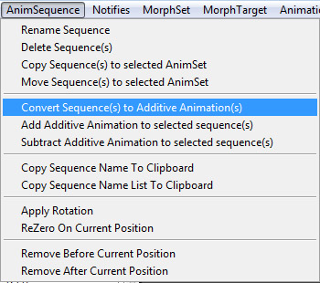
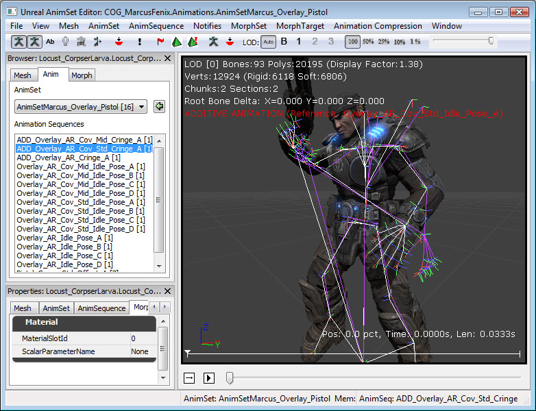

UDN
Search public documentation:
AdditiveAnimationsJP
English Translation
中国翻译
한국어
Interested in the Unreal Engine?
Visit the Unreal Technology site.
Looking for jobs and company info?
Check out the Epic games site.
Questions about support via UDN?
Contact the UDN Staff
中国翻译
한국어
Interested in the Unreal Engine?
Visit the Unreal Technology site.
Looking for jobs and company info?
Check out the Epic games site.
Questions about support via UDN?
Contact the UDN Staff
Additive(加算)アニメーション
ドキュメントの概要: Additive アニメーションの作成および使用ガイド。 ドキュメントの変更ログ: Laurent Delayen により作成。概要
Additive Animation (加算、加法的アニメーション) は AnAnimTree エディタ およびビューアで作成して操作し、 AnAnimTree エディタ で使用することができます。このドキュメントでは、Additive アニメーションとは何か、および Unreal エンジンのツールセットを用いてそれをどのように作成および使用するかについて説明します。Additive アニメーションとは
Additive アニメーションは、基本的に 2 つのアニメーションを相互に減算して作成します。減算により得られるのは、2 つのアニメーションの差です。そのため、Additive アニメーションだけでは大して有用ではなく、何かを表すためには別のアニメーションにこれを追加する必要があります (Additive アニメーションという用語はこれに由来しています)。Additive アニメーションの背後にある考えは、複数のアニメーションに適用できる additive ポーズを検出することで、それにより各ステートに必要なアニメーションの数を減らすことができます。例えば、武器の再装填アニメーションを加算アニメーションにして、これをアイドル状態のアニメーション、歩行アニメーションセット (前進、後退、左右) およびランニング用のアニメーションセットの上に追加することができます。つまり、Reload_Walk_Fwd アニメーションや、その他のあらゆる Reload+アクションのコンビネーションを実行する代わりに、Reload_Additive を作成してこれを Walk_Fwd、Run_Bwd などのアニメーションの上に追加できます。Additive アニメーションの利点
Additive アニメーションの利点は、上記の例に如実に表れています。これは必要なアニメーション数を一挙に抑える手段であり、アーティストがアニメーションの作成に必要な時間が削減されるだけでなく、ブレンドツリーも小さくなって管理が楽になります。Additive アニメーション VS フィルタ
上記の武器の再装填サンプルを、別の方法で実行することもできます。代わりにフィルタを使い、キャラクターの上半身で再装填アニメーションを再生しながら、下半身はそのままの状態で、アイドル、歩行、ランニングアニメーションを再生することができます。しかしここでフィルタ (またはマスク) の使用により遭遇する問題は、上半身が完全に上書きされてしまうことで、直立状態では走っているというよりも身体がただ硬直しているように見え、自然な動きになりません。フィルタのウェイトを背骨と両肩から下方向に補間しても、結果は思わしくありません。Additive アニメーションを使用することで、両方の動き (ボディ全体の動きと再装填) が維持され、結果の見栄えもずっと良くなります。Additive アニメーションの問題
Additive アニメーションの問題は、2 つのアニメーションを加算しても、常に期待どおりの結果が得られるとは限らないことです。作成される Additive アニメーションは 2 つのポーズの差で、得られるのは additive ポーズであり、基本ポーズの上では非常に上手く機能します。Additive = Anim1 - Anim2 の場合に Anim1 = Anim2 + Additive とすると、非常に見栄えがしますが、Anim3 + Additive では、結果が常によく見えるとは限りません。銃のフェイスの一部が切り取られていたり、キャラクターが不自然に見えるなどの可能性があります。つまり、Additive アニメーションの作成と使用は簡単なプロセスではないのです。通常は、ベースポーズに非常に似ているアニメーションの上で Additive アニメーションを使用し、IK ボーンを使ってリムのエラーを修正することをお勧めします。キャラクターの腰や脚に動きを付けるために Additive アニメーションを使用したのに、結果を見ると地面で予想していた位置に足が着いていないという問題がよくあります。この問題を解決するには足部に IK ボーンを使用します。Additive アニメーションの作成
相互に減算する 2 つのアニメーションは、いずれも同じアニメーションセット内に含まれていなければなりません。AnimSet (アニメーションセット) ビューアで目的のセットを開きます。ブラウザでアニメーションを選択します。Additive = A - B を実行する場合、先に A を選択して、次に下図のようにツールバーの [AnimSequence] メニューで [Convert Sequence(s) to Additive Animation(s)] (シーケンスを Additive アニメーションに変換) を選択します。
これを選択すると新しいウィンドウが次図のように現われます。 最初のボックスでは、Additive アニメーションの作成方法を選択します。この操作を簡単に示すと、「加算の結果 (Additive) = Source (選択した元のアニメーション) - ベースポーズ」になります。
最初のボックスでは、Additive アニメーションの作成方法を選択します。この操作を簡単に示すと、「加算の結果 (Additive) = Source (選択した元のアニメーション) - ベースポーズ」になります。
| Reference Pose | SkeletalMesh (骨格メッシュ) のバインドポーズをベースポーズとして使用します。 |
| Animation First Frame | ベースポーズのアニメーションの先頭フレームを使用します。 |
| Animation Scaled | ソースアニメーションの長さに一致するようにベースポーズのアニメーションをスケーリングします。 |
Additive アニメーションの表示
Additive アニメーションは差のポーズなので、これを表示したり理解することはできません。Additive アニメーションを可視化するには、Additive アニメーションの作成プロセス中にベースポーズを一緒に保存し、これをプレビューに使います。これを AnimSet エディタで再生すると、ベースポーズ + Additive アニメーションが表示されます。スケルトンビューでも同様に表示されます。ツールバーのそのプレビューアイコンの横には、ベースポーズのアニメーションを表示するアイコンもあり、これをクリックするとベースポーズの骨格がパープルで表示されます。次図のスクリーンショットには 2 つの骨格があり、Additive アニメーションによってベースポーズ（パープル) が実際に見えるポーズ (ホワイト) にどのように変換されるかを確認できます。
Additive アニメーションの再生
Additive アニメーションを AnimTree (アニメーションツリー) エディタで再生するには 2 通りの方法があり、AnimNodeAdditiveBlending ノードまたは AnimNodeSlot のいずれかを使用します。AnimNodeAdditiveBlending
このノードには 2 つのインプットリンクがあります。1 つはベースポーズで、通常のアニメーションを受け取り、もう 1 つのインプットは Additive アニメーションを受け取ります。スライダを使い、ベースポーズの上に適用する Additive アニメーションの量を調節します (0 - 100 %)。
AnimNodeSlot
AnimNodeSlots は Additive アニメーションの扱い方を理解しているので、特別な方法でスロットを使用する必要はなく、その上で Additive アニメーションを再生するだけで、Source インプットをオーバーライドせずに Additive アニメーションをその上に追加します。Additive アニメーションの操作
Additive アニメーションの操作は、AnimSet ビューアのツールバーにある AnimSequence メニューから行うことができます。Addition/Subtraction (加算と減算)
[Add Additive Animation to selected sequence(s)] (選択したシーケンスに Additive アニメーションを加算)、または [Subtract Additive Animation to selected sequence(s)] (選択したシーケンスから Additive アニメーションを減算) を選択すると、現在の選択項目に対して Additive アニメーションの加算または減算を行うことができます。 最初のボックスでは、新規作成するアニメーションの名前を入力します。
2 番目のボックスでは、2 つのアニメーションを組み合わせる方法を選択します。
最初のボックスでは、新規作成するアニメーションの名前を入力します。
2 番目のボックスでは、2 つのアニメーションを組み合わせる方法を選択します。
| Scale Additive To Source | Source (対象) アニメーションの長さに合わせて Additive アニメーションをスケーリングします。 |
| Scale Source To Additive | Additive アニメーションの長さに合わせて Source アニメーションをスケーリングします。 |